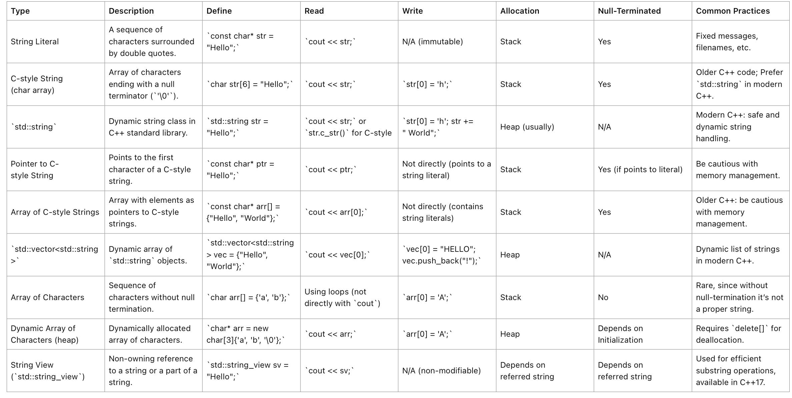

|
AnimationEngineCPP 0.0.1
|
Table of Contents
In C++, the string class is a part of the Standard Library, defined in the header file <string>. It represents a sequence of characters and provides various methods to manipulate and query strings. The string class simplifies many of the complexities of working with raw C-style character arrays.
Here's an overview of the string class in C++, including its methods and common ways to use it:
string()string(const string& str)string(const string& str, size_t pos, size_t len = npos)string(const char* s)string(size_t n, char c)at(size_t pos): Returns character at the specified position.operator[]: Access character at a specified position.front(): Returns the first character.back(): Returns the last character.c_str(): Returns a C-style character string.data(): Returns a pointer to the string data.append(): Append string.push_back(): Append character.assign(): Assign new content to the string.insert(): Insert content.erase(): Erase characters.replace(): Replace part of the string.swap(): Swap string values.pop_back(): Deletes the last character.size() or length(): Return length.resize(): Change the size.capacity(): Returns the size of allocated storage.reserve(): Request a change in capacity.clear(): Clears the string.empty(): Checks if the string is empty.shrink_to_fit(): Reduces memory usage by freeing unused memory.substr(): Returns a substring.copy(): Copy sequence of characters from string.c_str(): Returns a null-terminated character sequence.find(): Find content in string.rfind(): Find last occurrence of content in string.find_first_of(): Find character in string.find_last_of(): Find the last character in string.find_first_not_of(): Find character not in string.find_last_not_of(): Find the last character not in the string.compare(): Compare strings.Strings can be compared using relational operators like ==, !=, <, <=, >, and >=.
begin(): Returns an iterator pointing to the first character.end(): Returns an iterator pointing to the past-the-end character.rbegin(), rend(): Reverse iterators.cbegin(), cend(), crbegin(), crend(): Constant iterators.stoi(): Convert string to integer.stol(), stoll(): Convert string to long and long long.stof(), stod(), stold(): Convert string to float, double, and long double.to_string(): Convert numeric types to string.get_allocator(): Returns the allocator object.npos: Represents the maximum size of the string, used for "until the end of the string" in various methods.String Concatenation:
String Iteration:
Substrings and Searching:
This overview covers most of the string class's capabilities in C++. However, the best way to fully understand and grasp its depth is to refer to the official documentation or a C++ reference and try out various methods and operations for yourself.
Certainly! Let's delve into string literals and character literals in C++.
A character literal represents a single character and is enclosed in single quotes. In C++, a character literal has type char.
Examples:
-'1' -''`There are also some special character literals called escape sequences:
: Newline -'\t': Tab -'\r': Carriage return -'\'': Single quote -'"': Double quote -'\0': Null character -''`: Backspacewchar_t is used for wide character literals and is prefixed by L, e.g., ‘L'Z’.C++11 introducedchar16_tfor UTF-16 encoded characters with prefixu, e.g.,u'Z'andchar32_tfor UTF-32 encoded characters with prefixU, e.g.,U'Z'`.A string literal is a sequence of characters surrounded by double quotes. The compiler appends a null character (‘’\0'`) to every string literal, making it a null-terminated string.
Examples:
"Hello, World!""C++ Programming""12345"Similar to character literals, string literals also support escape sequences:
"This is a string with a newline character.\n"C++11 introduced raw string literals that allow you to write string literals without escaping characters. This is particularly useful for regex patterns, path specifications, or any multi-line string content. They are denoted by R and surrounded by "( )".
Example:
R"(This is a "raw" string. No need to escape the "double quotes".)"R"(C:\Path\To\Directory)" (notice no need to double backslash)wchar_t and are prefixed by L, e.g., L"Hello".char and are prefixed by u8, e.g., u8"Hello".char16_t and are prefixed by u, e.g., u"Hello".char32_t and are prefixed by U, e.g., U"Hello".It's crucial to understand that string literals (e.g., "Hello") are of type const char[]. On the other hand, the std::string type from the C++ Standard Library is a class designed to handle strings, providing many utility functions. They can be implicitly converted, so you often see them being used interchangeably:
In the example above, the string literal "This is a string literal assigned to a std::string object." is automatically converted to a std::string object.
Extended table for string in C++.
| Type/Method | Description | Memory | Mutable | R/W | Size Specified | Example | Usage & Common Practices |
|---|---|---|---|---|---|---|---|
| C-style array | Fixed-size, contiguous block of memory. | Stack | Yes | R/W | Yes ([N]) | int arr[3] = {1, 2, 3}; | Prefer std::array or std::vector for safety and flexibility. |
| Dynamic C-style array | Dynamically-allocated array. | Heap | Yes | R/W | No ([]) | int* arr = new int[3]; arr[0] = 1; | Use with caution; must manually manage memory with delete[]. |
std::array<T, N> | Fixed-size, stack-allocated. | Stack | Yes | R/W | Yes (<T, N>) | std::array<int, 3> arr = {1, 2, 3}; | Preferred over C-style array for fixed-size lists. |
std::vector<T> | Dynamic array with auto-resizing. | Heap & Stack | Yes | R/W | No (at creation) | std::vector<int> vec = {1, 2, 3}; | Most common dynamic list in C++; handles memory management. |
std::list<T> | Doubly-linked list. | Heap | Yes | R/W | No (at creation) | std::list<int> lst = {1, 2, 3}; | Use when frequent insertions/deletions are required in the middle. |
| Pointer to C-style array | Points to the first element of an array. | Depends | Depends | R/W | Depends | int nums[3] = {1, 2, 3}; int* p = nums; | Raw pointers can be error-prone; prefer modern alternatives. |
| Array of pointers | Array where each element is a pointer. | Stack | Yes | R/W | Yes ([N]) | int* arr[3]; for(int i=0; i<3; i++) arr[i] = new int(i+1); | Use when needing an array of objects on the heap. |
Notes:

| Type | Description | Define | Read | Write | Allocation | Null-Terminated | Common Practices |
|---|---|---|---|---|---|---|---|
| String Literal | A sequence of characters surrounded by double quotes. | const char* str = "Hello"; | cout << str; | N/A (immutable) | Stack | Yes | Fixed messages, filenames, etc. |
| C-style String (char array) | Array of characters ending with a null terminator (‘’\0'). \ilinebr </td> <td class="markdownTableBodyNone">char str[6] = "Hello";\ilinebr </td> <td class="markdownTableBodyNone">cout << str;\ilinebr </td> <td class="markdownTableBodyNone">str[0] = 'h';\ilinebr </td> <td class="markdownTableBodyNone"> Stack \ilinebr </td> <td class="markdownTableBodyNone"> Yes \ilinebr </td> <td class="markdownTableBodyNone"> Older C++ code; Preferstd::stringin modern C++. \ilinebr </td> </tr> <tr class="markdownTableRowOdd"> <td class="markdownTableBodyNone"> **std::string** \ilinebr </td> <td class="markdownTableBodyNone"> Dynamic string class in C++ standard library. \ilinebr </td> <td class="markdownTableBodyNone">std::string str = "Hello";\ilinebr </td> <td class="markdownTableBodyNone">cout << str;orstr.c_str()for C-style \ilinebr </td> <td class="markdownTableBodyNone">str[0] = 'h'; str += " World";\ilinebr </td> <td class="markdownTableBodyNone"> Heap (usually) \ilinebr </td> <td class="markdownTableBodyNone"> N/A \ilinebr </td> <td class="markdownTableBodyNone"> Modern C++: safe and dynamic string handling. \ilinebr </td> </tr> <tr class="markdownTableRowEven"> <td class="markdownTableBodyNone"> **Pointer to C-style String** \ilinebr </td> <td class="markdownTableBodyNone"> Points to the first character of a C-style string. \ilinebr </td> <td class="markdownTableBodyNone">const char* ptr = "Hello";\ilinebr </td> <td class="markdownTableBodyNone">cout << ptr;\ilinebr </td> <td class="markdownTableBodyNone"> Not directly (points to a string literal) \ilinebr </td> <td class="markdownTableBodyNone"> Stack \ilinebr </td> <td class="markdownTableBodyNone"> Yes (if points to literal) \ilinebr </td> <td class="markdownTableBodyNone"> Be cautious with memory management. \ilinebr </td> </tr> <tr class="markdownTableRowOdd"> <td class="markdownTableBodyNone"> **Array of C-style Strings** \ilinebr </td> <td class="markdownTableBodyNone"> Array with elements as pointers to C-style strings. \ilinebr </td> <td class="markdownTableBodyNone">const char* arr[] = {"Hello", "World"};\ilinebr </td> <td class="markdownTableBodyNone">cout << arr[0];\ilinebr </td> <td class="markdownTableBodyNone"> Not directly (contains string literals) \ilinebr </td> <td class="markdownTableBodyNone"> Stack \ilinebr </td> <td class="markdownTableBodyNone"> Yes \ilinebr </td> <td class="markdownTableBodyNone"> Older C++: be cautious with memory management. \ilinebr </td> </tr> <tr class="markdownTableRowEven"> <td class="markdownTableBodyNone"> **std::vector<std::string>** \ilinebr </td> <td class="markdownTableBodyNone"> Dynamic array ofstd::stringobjects. \ilinebr </td> <td class="markdownTableBodyNone">std::vector<std::string> vec = {"Hello", "World"};\ilinebr </td> <td class="markdownTableBodyNone">cout << vec[0];\ilinebr </td> <td class="markdownTableBodyNone">vec[0] = "HELLO"; vec.push_back("!");\ilinebr </td> <td class="markdownTableBodyNone"> Heap \ilinebr </td> <td class="markdownTableBodyNone"> N/A \ilinebr </td> <td class="markdownTableBodyNone"> Dynamic list of strings in modern C++. \ilinebr </td> </tr> <tr class="markdownTableRowOdd"> <td class="markdownTableBodyNone"> **Array of Characters** \ilinebr </td> <td class="markdownTableBodyNone"> Sequence of characters without null termination. \ilinebr </td> <td class="markdownTableBodyNone">char arr[] = {'a', 'b'};\ilinebr </td> <td class="markdownTableBodyNone"> Using loops (not directly withcout) \ilinebr </td> <td class="markdownTableBodyNone">arr[0] = 'A';\ilinebr </td> <td class="markdownTableBodyNone"> Stack \ilinebr </td> <td class="markdownTableBodyNone"> No \ilinebr </td> <td class="markdownTableBodyNone"> Rare, since without null-termination it's not a proper string. \ilinebr </td> </tr> <tr class="markdownTableRowEven"> <td class="markdownTableBodyNone"> **Dynamic Array of Characters (heap)** \ilinebr </td> <td class="markdownTableBodyNone"> Dynamically allocated array of characters. \ilinebr </td> <td class="markdownTableBodyNone">char* arr = new char[3]{'a', 'b', '\0'};\ilinebr </td> <td class="markdownTableBodyNone">cout << arr;\ilinebr </td> <td class="markdownTableBodyNone">arr[0] = 'A';\ilinebr </td> <td class="markdownTableBodyNone"> Heap \ilinebr </td> <td class="markdownTableBodyNone"> Depends on Initialization \ilinebr </td> <td class="markdownTableBodyNone"> Requiresdelete[]for deallocation. \ilinebr </td> </tr> <tr class="markdownTableRowOdd"> <td class="markdownTableBodyNone"> **String View (std::string_view)** \ilinebr </td> <td class="markdownTableBodyNone"> Non-owning reference to a string or a part of a string. \ilinebr </td> <td class="markdownTableBodyNone">std::string_view sv = "Hello";\ilinebr </td> <td class="markdownTableBodyNone">cout << sv;` | N/A (non-modifiable) | Depends on referred string | Depends on referred string | Used for efficient substring operations, available in C++17. |
Additional Notes:
std::string_view**: This is a lightweight, non-owning reference to a string. It doesn't allocate or deallocate memory, and it's useful when you want to work with substrings without copying. Always ensure that the underlying data outlives the string_view to avoid dangling references.This table should now provide a comprehensive overview of the different ways you can represent and work with strings in C++.
| Method | Description | Example |
|---|---|---|
| C-style (stack) | An array of characters on the stack. Needs manual null termination. | char str[] = "Hello"; |
| C-style (heap) | An array of characters on the heap. Needs manual null termination. | char* str = new char[6]; strcpy(str, "Hello"); |
| std::string (stack) | C++ standard string class. Stored on the stack, manages memory. | std::string str = "Hello"; |
| std::string (heap) | C++ standard string class. Object is allocated on the heap. | std::string* str = new std::string("Hello"); |
| String Literal | Immutable sequence of characters. Stored in static memory region. | const char* str = "Hello"; |
| Raw String Literal | Allows for strings that span multiple lines or contain backslashes. | const char* str = R"(Hello\nWorld)"; (no escape needed) |
| std::stringstream | Dynamic string stream. Useful for constructing strings from mixed types | std::stringstream ss; ss << "Hello " << 42; |
delete (or delete[] for arrays) to avoid memory leaks.| Type | Description | Define | Read | Write | Allocation | Null-Terminated | Common Practices |
|---|---|---|---|---|---|---|---|
| String Literal | A sequence of characters surrounded by double quotes. | const char* str = "Hello"; | cout << str; | N/A (immutable) | Stack | Yes | Fixed messages, filenames, etc. |
| C-style String (char array) | Array of characters ending with a null terminator (‘’\0'). \ilinebr </td> <td class="markdownTableBodyNone">char str[6] = "Hello";\ilinebr </td> <td class="markdownTableBodyNone">cout << str;\ilinebr </td> <td class="markdownTableBodyNone">str[0] = 'h';\ilinebr </td> <td class="markdownTableBodyNone"> Stack \ilinebr </td> <td class="markdownTableBodyNone"> Yes \ilinebr </td> <td class="markdownTableBodyNone"> Older C++ code; Preferstd::stringin modern C++. \ilinebr </td> </tr> <tr class="markdownTableRowOdd"> <td class="markdownTableBodyNone"> **std::string** \ilinebr </td> <td class="markdownTableBodyNone"> Dynamic string class in C++ standard library. \ilinebr </td> <td class="markdownTableBodyNone">std::string str = "Hello";\ilinebr </td> <td class="markdownTableBodyNone">cout << str;orstr.c_str()for C-style \ilinebr </td> <td class="markdownTableBodyNone">str[0] = 'h'; str += " World";\ilinebr </td> <td class="markdownTableBodyNone"> Heap (usually) \ilinebr </td> <td class="markdownTableBodyNone"> N/A \ilinebr </td> <td class="markdownTableBodyNone"> Modern C++: safe and dynamic string handling. \ilinebr </td> </tr> <tr class="markdownTableRowEven"> <td class="markdownTableBodyNone"> **Pointer to C-style String** \ilinebr </td> <td class="markdownTableBodyNone"> Points to the first character of a C-style string. \ilinebr </td> <td class="markdownTableBodyNone">const char* ptr = "Hello";\ilinebr </td> <td class="markdownTableBodyNone">cout << ptr;\ilinebr </td> <td class="markdownTableBodyNone"> Not directly (points to a string literal) \ilinebr </td> <td class="markdownTableBodyNone"> Stack \ilinebr </td> <td class="markdownTableBodyNone"> Yes (if points to literal) \ilinebr </td> <td class="markdownTableBodyNone"> Be cautious with memory management. \ilinebr </td> </tr> <tr class="markdownTableRowOdd"> <td class="markdownTableBodyNone"> **Array of C-style Strings** \ilinebr </td> <td class="markdownTableBodyNone"> Array with elements as pointers to C-style strings. \ilinebr </td> <td class="markdownTableBodyNone">const char* arr[] = {"Hello", "World"};\ilinebr </td> <td class="markdownTableBodyNone">cout << arr[0];\ilinebr </td> <td class="markdownTableBodyNone"> Not directly (contains string literals) \ilinebr </td> <td class="markdownTableBodyNone"> Stack \ilinebr </td> <td class="markdownTableBodyNone"> Yes \ilinebr </td> <td class="markdownTableBodyNone"> Older C++: be cautious with memory management. \ilinebr </td> </tr> <tr class="markdownTableRowEven"> <td class="markdownTableBodyNone"> **std::vector<std::string>** \ilinebr </td> <td class="markdownTableBodyNone"> Dynamic array ofstd::stringobjects. \ilinebr </td> <td class="markdownTableBodyNone">std::vector<std::string> vec = {"Hello", "World"};\ilinebr </td> <td class="markdownTableBodyNone">cout << vec[0];\ilinebr </td> <td class="markdownTableBodyNone">vec[0] = "HELLO"; vec.push_back("!");\ilinebr </td> <td class="markdownTableBodyNone"> Heap \ilinebr </td> <td class="markdownTableBodyNone"> N/A \ilinebr </td> <td class="markdownTableBodyNone"> Dynamic list of strings in modern C++. \ilinebr </td> </tr> <tr class="markdownTableRowOdd"> <td class="markdownTableBodyNone"> **Array of Characters** \ilinebr </td> <td class="markdownTableBodyNone"> Sequence of characters without null termination. \ilinebr </td> <td class="markdownTableBodyNone">char arr[] = {'a', 'b'};\ilinebr </td> <td class="markdownTableBodyNone"> Using loops (not directly withcout) \ilinebr </td> <td class="markdownTableBodyNone">arr[0] = 'A';\ilinebr </td> <td class="markdownTableBodyNone"> Stack \ilinebr </td> <td class="markdownTableBodyNone"> No \ilinebr </td> <td class="markdownTableBodyNone"> Rare, since without null-termination it's not a proper string. \ilinebr </td> </tr> <tr class="markdownTableRowEven"> <td class="markdownTableBodyNone"> **Dynamic Array of Characters (heap)** \ilinebr </td> <td class="markdownTableBodyNone"> Dynamically allocated array of characters. \ilinebr </td> <td class="markdownTableBodyNone">char* arr = new char[3]{'a', 'b', '\0'};\ilinebr </td> <td class="markdownTableBodyNone">cout << arr;\ilinebr </td> <td class="markdownTableBodyNone">arr[0] = 'A';\ilinebr </td> <td class="markdownTableBodyNone"> Heap \ilinebr </td> <td class="markdownTableBodyNone"> Depends on Initialization \ilinebr </td> <td class="markdownTableBodyNone"> Requiresdelete[]for deallocation. \ilinebr </td> </tr> <tr class="markdownTableRowOdd"> <td class="markdownTableBodyNone"> **String View (std::string_view)** \ilinebr </td> <td class="markdownTableBodyNone"> Non-owning reference to a string or a part of a string. \ilinebr </td> <td class="markdownTableBodyNone">std::string_view sv = "Hello";\ilinebr </td> <td class="markdownTableBodyNone">cout << sv;` | N/A (non-modifiable) | Depends on referred string | Depends on referred string | Used for efficient substring operations, available in C++17. |
Notes:
char arrays) are error-prone due to manual memory management, lack of bounds checking, and susceptibility to buffer overflows.std::string** is dynamic and manages its memory. It can grow or shrink, and it's safer than C-style strings.std::string and std::vector<std::string> in modern C++ unless there's a specific need for C-style handling or interfacing with older APIs.Remember, regardless of how you're working with strings in C++, always be cautious about buffer overflows, memory leaks, and undefined behavior. Proper memory management is crucial, especially when working with raw pointers or C-style strings.
Notes:
) can't be directly printed withcoutwithout potential issues.It's always essential to deallocate heap memory explicitly in C++ when using raw pointers.Usingstd::stringandstd::vector` abstracts away many of the complexities and pitfalls associated with raw pointers and arrays.Certainly, let's ensure the table is comprehensive. I'll add a few more scenarios related to string handling in C++:
Additional Notes:
std::string_view**: This is a lightweight, non-owning reference to a string. It doesn't allocate or deallocate memory, and it's useful when you want to work with substrings without copying. Always ensure that the underlying data outlives the string_view to avoid dangling references.| Library | Description |
|---|---|
| Boost.StringAlgo & Boost.StringView | Part of the Boost library, they offer functions and classes for string manipulations. |
| ICU (International Components for Unicode) | A comprehensive library for Unicode support, text processing, regular expressions, and more. |
| UTF8-CPP | Header-only library for encoding and decoding UTF-8 strings. |
| fmt (previously cppformat/fmtlib) | Modern string formatting library, an alternative to printf and sprintf. |
| RE2 | Highly efficient, memory-safe regular expression library. |
| CTRE (Compile Time Regular Expressions) | Allows for regex matching at compile-time for potential performance benefits. |
| abseil (from Google) | Collection of C++ libraries with utilities for string operations among others. |
The expression char* argv[] is used in the main function of a C++ program to represent the command line arguments passed to the program. Here, argv is an array of pointers to char, where each pointer points to a null-terminated string (a C-style string). The size of the array is determined by the number of arguments passed to the program (including the program name itself).
The declaration char* argv[] can also be written as char** argv. These two declarations are equivalent in this context. Here's how:
char* argv[] is an array of char pointers.char** argv is a pointer to a char pointer, and it can also point to an array of char pointers.In both cases, argv can be indexed like an array to access the individual command-line arguments, and these arguments can be accessed as null-terminated strings. So, you can declare the main function with either of these equivalent forms:
or
In both cases, argc is the count of command-line arguments, and argv is an array of the arguments themselves as C-style strings.
Sure, here's an example of how you can loop over argv using either char* argv[] or char** argv. Both examples do exactly the same thing: they print each command-line argument on a separate line.
char* argv[]:char** argv:argv array.argc is the number of command-line arguments (including the name of the program itself as the first argument), and argv is an array of those arguments as C-style strings. This is why we can use a loop to go through each argument in the argv array, from argv[0] (which is the program name) to argv[argc-1] (which is the last command-line argument).Sure, here are several ways to create a string of characters in C++, including using C-style methods:
While C-style strings are familiar, they can be error-prone due to issues like buffer overflows. Using std::string from the C++ Standard Library is safer and more flexible.